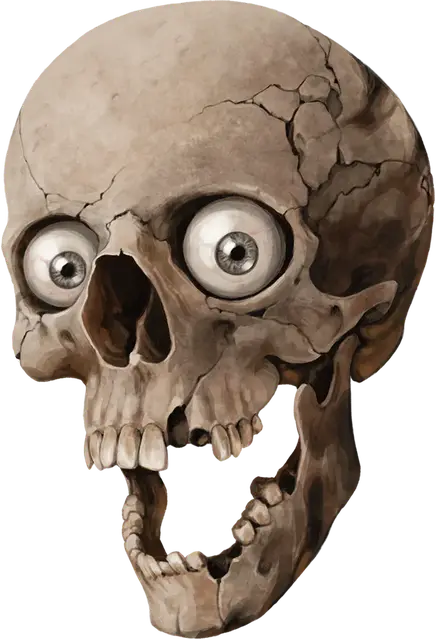

Морте
Morte
Крошечная Нежить, хаотично-добрая, именной НИП

Класс Доспеха 13
Хиты 22 (4к4 + 12)
Скорость 0 футов, летая 30 футов (парит)
| мод | спас | ||
|---|---|---|---|
| СИЛ | 10 | +0 | +0 |
| ЛОВ | 16 | +3 | +3 |
| ТЕЛ | 16 | +3 | +3 |
| мод | спас | ||
|---|---|---|---|
| ИНТ | 13 | +1 | +1 |
| МДР | 10 | +0 | +0 |
| ХАР | 12 | +1 | +1 |
Навыки Магия +3, Скрытность +5
Уязвимость к урону дробящий
Иммунитет к урону яд
Иммунитет к состояниям истощение, отравление
Чувства тёмное зрение 60 футов, пассивное Восприятие 10
Языки Общий
Опасность 1/4 (50 опыта)
Бонус мастерства +2
Действия
Укус. . Рукопашная атака оружием: +5 к попаданию, досягаемость 5 футов, одна цель. Попадание: 5 (1к4 +3) колющего урона.
Описание
Говорящий череп Морте - сварливый межпланетный путешественник, спасенный от вечных мук в Девяти Преисподних. Измученный ложью, которую он говорил при жизни, Морте маскирует свою боль нездоровым чувством юмора и невыносимым количеством сарказма.